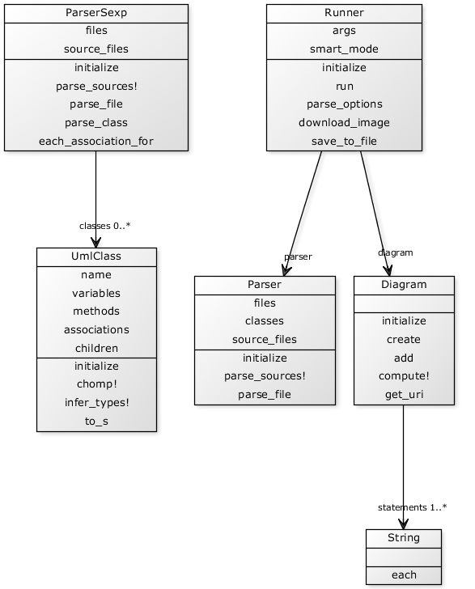

Open-source project that generates class diagrams from your ruby rouce code.
Open-source project that generates class diagrams from your ruby rouce code.
Here is the result of running umlify on itself

That's all.
If you like this project, you can spread the word, and if you are a developer you can contribute by forking it, making some changes and send me a pull request.